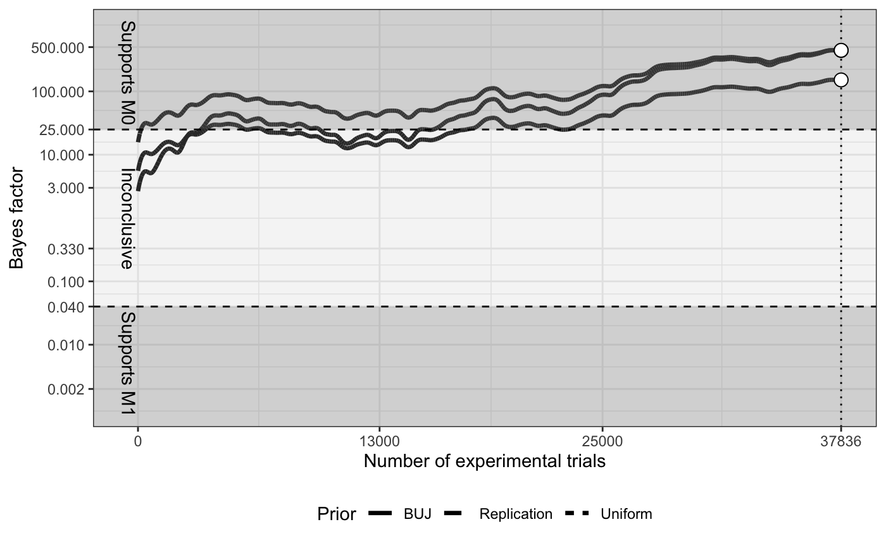

First, you have to install the package.
# install.packages("devtools") devtools::install_github("marton-balazs-kovacs/tppr")
Second you have to load the package.
The analysis depends on preset parameters that are saved as a list of values in the analysis_params datafile. This datafile is part of the package. If you want to know more about the default analysis parameters check ?tppr::analysis_params.
You can load the analysis parameters datafile in the current workspace.
data(analysis_params)
You can also modify the parameters after loading.
Getting the probability of M0:
analysis_params$m0_prob #> [1] 0.5
Changing the value:
analysis_params$m0_prob <- 0.53
You can run the analysis on several different data types:
In the following we show you how to load each type of data.
The example datasets are included in the package. If you want to know more about the datasets you can use the ?tppr::exampl_m0 and the ?tppr::exampl_m1 functions to read the documentation.
It is also possible to generate your own example dataset. TODO: Finish this part once the function is ready.
# generate_example_data()
You can download and read the collected data from the projects Github repository. There are three types of collected data:
# Read live data tpp_raw_data <- read_data(type = "live") #> There are 465 participants who started the experiment. # For testing purposes we will use the example_m0 dataset from now on tpp_raw_data <- example_m0
After reading the raw data that contains all the trials during data cleaning the empty trials are excluded and only the erotic trials are kept.
However, this step is included in the primary confirmatory analysis function analysis_confirmatory, therefore you do not have to run it separately.
tpp_processed_data <- clean_data(raw_data = tpp_raw_data)
All the descriptive results of the study can be calculated with the ?tppr::sample_descriptives function. The function returns a list of the descriptive results that can be later used to populate the research paper.
The function runs at the latest passed checkpoint, unless it is indicated differently in the which_checkpoint argument.
descriptive_results <- sample_descriptives(raw_data = tpp_raw_data, which_checkpoint = NA_integer_) descriptive_results #> $age_desc #> # A tibble: 2 x 4 #> age n N prop #> <chr> <int> <int> <dbl> #> 1 18-29 1089 2165 50.3 #> 2 30-44 1076 2165 49.7 #> #> $age_range_of_most_participants #> [1] "18-29" #> #> $age_range_of_most_participants_proportion #> [1] 50.30023 #> #> $checkpoint_inf #> $checkpoint_inf$total_n #> [1] 51457 #> #> $checkpoint_inf$current_checkpoint #> [1] 1 #> #> $checkpoint_inf$next_checkpoint #> [1] 2 #> #> $checkpoint_inf$last_row #> [1] 86592 #> #> #> $esp_q_desc #> # A tibble: 1 x 2 #> mean sd #> <dbl> <dbl> #> 1 2.97 1.41 #> #> $first_rows_of_each_participant #> # A tibble: 2,165 x 23 #> timestamp participant_ID experimenter_ID… experimenter_AS… laboratory_ID_c… #> <chr> <chr> <chr> <dbl> <chr> #> 1 simulati… part_1 exp_9 9 lab_5 #> 2 simulati… part_10 exp_6 6 lab_3 #> 3 simulati… part_100 exp_7 7 lab_4 #> 4 simulati… part_1000 exp_9 9 lab_5 #> 5 simulati… part_1001 exp_2 2 lab_1 #> 6 simulati… part_1002 exp_2 2 lab_1 #> 7 simulati… part_1003 exp_4 4 lab_2 #> 8 simulati… part_1004 exp_4 4 lab_2 #> 9 simulati… part_1005 exp_6 6 lab_3 #> 10 simulati… part_1006 exp_4 4 lab_2 #> # … with 2,155 more rows, and 18 more variables: sitePI_ASGS_total_score <dbl>, #> # session_type <chr>, consent_screen_answer <chr>, #> # refused_to_answer_sexual_orientation_question <chr>, age <chr>, sex <chr>, #> # final_consent <chr>, ESP_Q_item_1 <chr>, ESP_Q_item_2 <chr>, #> # ESP_Q_item_3 <chr>, SS_Q_item_1 <chr>, SS_Q_item_2 <chr>, #> # trial_number <dbl>, guessed_side <chr>, target_side <chr>, #> # reward_type <chr>, sides_match <lgl>, row_counter <int> #> #> $guessed_side_left #> # A tibble: 1 x 4 #> guessed_side n N prop #> <chr> <int> <int> <dbl> #> 1 left 1125 2165 52.0 #> #> $last_row #> [1] 86592 #> #> $n_erotic_trials_per_participant #> [1] 18 18 18 18 18 18 7 18 18 18 18 18 18 18 18 18 18 18 18 18 18 18 18 18 #> [25] 18 18 18 18 18 18 18 18 18 18 15 18 18 18 18 18 18 18 18 18 18 18 18 18 #> [49] 18 18 18 18 18 18 18 18 18 18 18 18 18 4 18 18 18 18 18 18 6 18 18 18 #> [73] 18 18 18 18 18 18 18 18 11 18 18 18 18 18 18 18 18 18 18 18 18 18 18 18 #> [97] 18 18 18 18 18 18 18 18 18 18 18 18 18 18 10 18 18 18 18 18 18 18 18 18 #> [121] 18 18 18 18 18 18 18 18 18 18 18 18 18 18 18 18 18 18 18 18 18 18 18 18 #> [145] 18 18 18 18 18 18 18 18 18 18 18 18 18 18 18 18 18 15 18 18 18 18 18 18 #> [169] 18 18 18 18 18 11 18 18 18 18 18 18 18 18 17 18 18 18 18 18 18 18 18 18 #> [193] 18 18 18 18 18 18 18 18 18 18 18 18 18 18 18 18 18 18 18 18 8 18 18 18 #> [217] 18 18 18 18 18 18 18 18 18 18 18 17 18 18 18 18 18 18 18 18 18 18 18 18 #> [241] 18 18 18 18 2 18 18 18 18 18 18 18 18 18 18 18 18 9 18 18 18 18 18 18 #> [265] 18 18 18 18 18 18 18 18 18 18 18 18 13 15 18 18 18 18 18 18 18 18 18 18 #> [289] 18 18 18 18 18 18 18 18 18 18 18 18 18 18 18 18 18 18 18 6 18 18 18 18 #> [313] 18 18 18 18 18 18 18 18 18 18 18 18 18 18 18 18 18 18 18 18 18 18 18 18 #> [337] 18 18 18 18 18 18 18 18 18 18 18 18 18 18 18 18 18 18 18 18 18 18 18 18 #> [361] 4 18 18 18 18 18 18 18 18 18 18 18 18 18 18 18 18 18 18 14 18 18 18 18 #> [385] 18 18 18 18 18 18 18 18 18 18 18 18 18 18 18 18 18 18 18 18 6 18 18 18 #> [409] 18 18 18 18 18 18 18 18 18 18 18 18 18 18 18 18 18 18 18 18 18 18 18 18 #> [433] 18 18 18 18 18 18 18 18 18 18 18 18 18 18 18 18 4 18 18 3 18 18 18 18 #> [457] 18 18 18 18 18 18 18 18 18 18 18 18 18 18 16 18 18 18 18 18 18 18 18 18 #> [481] 18 18 18 18 18 18 18 18 18 12 18 18 18 18 18 18 18 18 18 18 18 18 18 18 #> [505] 18 18 18 18 18 18 18 18 18 18 18 18 18 18 18 18 18 18 18 18 18 18 18 18 #> [529] 18 2 18 16 18 18 18 8 18 18 18 18 18 8 18 18 18 18 18 18 18 18 18 18 #> [553] 18 18 18 18 18 18 18 18 18 18 18 18 18 16 18 18 18 18 18 18 18 18 18 6 #> [577] 18 18 18 18 18 18 18 18 18 18 18 9 18 18 18 18 18 18 18 18 18 18 18 3 #> [601] 18 18 18 18 18 18 18 18 18 18 18 18 18 18 18 18 18 18 18 18 18 18 11 18 #> [625] 18 18 18 18 18 18 18 18 2 14 18 18 11 18 8 18 18 18 1 18 18 18 18 18 #> [649] 18 3 18 13 18 18 18 18 18 18 18 18 18 18 18 18 18 17 18 18 18 18 11 18 #> [673] 18 18 18 18 18 18 18 18 18 18 18 18 18 18 18 18 18 18 18 18 18 18 18 18 #> [697] 18 18 18 18 18 18 18 18 18 18 18 18 18 18 18 18 18 18 18 18 18 18 18 18 #> [721] 18 5 18 18 18 18 18 18 18 18 18 18 18 18 18 18 18 18 18 18 18 18 18 18 #> [745] 18 18 18 18 18 18 18 18 18 18 18 18 18 18 18 18 18 18 18 18 18 18 8 18 #> [769] 18 18 18 18 18 18 18 18 18 18 18 18 18 18 18 18 18 18 18 18 18 18 18 18 #> [793] 18 18 12 18 18 18 18 18 6 18 18 18 18 18 18 18 18 18 18 18 18 18 18 18 #> [817] 18 8 14 18 18 18 18 18 18 18 18 18 12 18 18 18 18 18 18 18 18 18 18 18 #> [841] 18 18 18 18 18 18 18 18 18 18 18 18 18 18 18 18 18 18 18 18 18 18 18 18 #> [865] 18 18 18 18 18 18 13 18 18 18 18 18 18 18 18 18 18 18 18 18 18 18 18 1 #> [889] 18 18 18 18 18 18 18 18 18 18 18 18 18 18 18 18 18 18 6 13 18 18 18 18 #> [913] 1 18 18 18 18 18 18 18 5 18 18 18 1 18 18 18 18 18 18 18 18 18 18 18 #> [937] 18 18 18 18 18 18 18 18 18 18 18 18 18 18 18 14 18 18 18 18 18 18 18 18 #> [961] 15 18 1 18 18 18 14 18 18 18 18 18 18 18 18 18 18 15 18 18 18 18 18 18 #> [985] 18 18 18 18 18 18 18 18 18 18 18 3 18 18 18 18 18 18 18 18 18 18 18 18 #> [1009] 18 18 18 18 18 18 18 18 18 18 18 18 18 18 18 18 18 15 18 18 18 16 18 18 #> [1033] 18 18 18 18 18 8 18 18 18 18 18 17 18 18 18 18 18 18 18 18 18 18 18 16 #> [1057] 18 18 18 18 18 18 18 18 10 18 18 18 18 18 18 18 18 18 18 18 18 18 18 15 #> [1081] 18 18 18 18 18 18 18 18 18 18 18 18 18 18 18 18 18 18 18 18 18 18 18 18 #> [1105] 18 18 18 18 18 18 18 18 18 18 18 18 18 18 18 18 18 18 18 18 18 18 18 18 #> [1129] 18 18 18 18 18 18 18 18 18 18 18 18 18 18 18 18 5 18 18 18 18 18 18 18 #> [1153] 18 18 9 18 18 18 18 18 18 18 18 18 18 18 18 18 18 18 18 18 18 18 18 17 #> [1177] 18 18 18 18 18 14 18 16 18 18 18 18 18 18 18 18 18 18 18 18 18 18 18 18 #> [1201] 18 18 1 8 18 1 18 18 18 18 18 18 18 18 18 18 18 18 18 18 18 18 18 18 #> [1225] 18 18 18 13 18 18 18 18 18 18 18 18 18 18 18 18 18 18 18 5 18 18 18 18 #> [1249] 18 18 18 18 18 18 18 18 18 18 18 18 18 18 18 18 18 18 18 18 18 13 6 18 #> [1273] 18 18 8 10 18 18 18 18 18 18 18 18 18 18 18 18 18 18 18 18 18 18 10 18 #> [1297] 18 18 18 18 18 18 18 7 18 18 18 18 18 18 18 18 18 18 3 18 18 18 18 18 #> [1321] 18 18 18 18 18 18 18 18 18 18 13 18 18 18 18 18 18 18 18 18 18 18 18 18 #> [1345] 18 18 18 18 18 18 18 18 18 18 18 18 18 18 18 18 18 18 18 18 18 18 18 18 #> [1369] 18 18 18 18 18 18 18 18 18 18 18 18 18 18 18 18 18 18 18 18 18 18 18 18 #> [1393] 18 18 18 18 18 18 18 18 18 18 18 18 18 18 18 18 18 18 18 18 18 18 18 18 #> [1417] 18 18 18 18 18 18 18 18 18 18 18 18 18 18 18 18 18 18 18 18 18 18 18 18 #> [1441] 18 18 18 18 18 18 18 18 18 18 18 18 18 18 18 18 18 18 18 18 18 18 18 18 #> [1465] 18 18 18 18 18 18 18 18 18 18 18 18 18 18 18 18 18 18 18 18 18 18 18 18 #> [1489] 18 18 18 18 18 18 18 18 18 18 18 4 18 18 18 18 18 18 18 18 18 18 18 18 #> [1513] 18 18 18 18 18 18 18 9 18 18 18 18 18 18 18 18 18 18 18 18 18 18 18 4 #> [1537] 18 18 18 18 18 18 18 18 18 18 18 18 18 18 18 18 18 18 18 18 18 18 18 18 #> [1561] 18 18 18 18 18 18 18 18 18 18 18 18 18 18 18 18 18 18 18 18 18 18 18 18 #> [1585] 18 18 18 16 18 18 18 18 18 18 18 18 18 18 18 18 18 18 18 18 18 12 8 18 #> [1609] 18 18 18 18 18 18 18 18 18 15 18 18 18 18 18 18 18 18 18 18 18 18 18 18 #> [1633] 18 18 18 18 18 18 7 18 18 18 18 18 18 18 18 7 18 4 18 18 18 18 2 18 #> [1657] 18 18 18 18 4 18 18 18 18 18 18 18 18 18 11 18 18 18 18 18 18 18 18 18 #> [1681] 18 18 18 18 18 18 18 18 18 18 18 7 10 18 18 18 18 18 18 18 18 18 18 18 #> [1705] 18 18 1 18 18 18 18 18 18 11 18 18 18 18 18 18 18 18 18 18 18 18 18 18 #> [1729] 18 18 18 18 16 7 18 18 18 18 18 18 18 18 18 18 18 18 18 18 18 18 18 18 #> [1753] 18 18 18 18 18 18 18 18 18 18 18 18 18 18 18 18 18 18 18 18 18 18 18 15 #> [1777] 18 18 18 18 18 18 18 18 18 18 5 18 18 18 18 18 18 18 13 18 9 18 18 18 #> [1801] 18 18 18 18 18 18 18 18 18 17 18 18 18 18 18 6 18 18 18 18 18 18 18 18 #> [1825] 2 18 18 18 18 18 18 18 18 18 18 18 18 18 18 18 18 18 18 18 18 18 18 18 #> [1849] 18 18 18 18 18 17 18 18 18 18 18 13 18 18 18 18 18 18 18 18 18 18 18 18 #> [1873] 18 18 18 18 18 8 18 18 18 18 18 18 18 18 18 18 18 18 18 8 18 18 18 18 #> [1897] 18 18 18 18 18 18 18 18 18 18 18 18 18 18 18 18 18 18 18 18 18 18 18 18 #> [1921] 18 18 18 18 18 18 18 10 18 18 18 18 18 18 18 18 18 18 18 9 18 18 18 18 #> [1945] 18 7 18 18 18 18 18 18 18 18 18 18 18 18 18 18 18 18 18 4 18 18 18 18 #> [1969] 18 18 18 18 18 18 18 18 18 18 18 18 18 18 18 18 18 18 18 18 18 18 18 18 #> [1993] 18 18 18 18 18 18 18 18 18 18 18 18 18 18 18 18 13 18 18 18 18 18 18 18 #> [2017] 18 18 18 18 18 18 18 18 18 18 18 18 18 18 18 18 18 18 18 18 3 18 18 18 #> [2041] 18 5 18 18 18 18 18 18 18 18 18 18 18 18 18 18 18 18 18 18 18 18 18 18 #> [2065] 18 18 18 18 18 18 18 18 18 18 18 18 18 18 18 13 3 18 18 18 18 18 18 18 #> [2089] 18 18 18 18 18 18 18 18 18 18 18 18 18 18 18 18 18 18 18 18 18 18 18 18 #> [2113] 18 13 18 18 18 18 18 18 18 18 18 18 18 18 18 18 18 18 6 18 17 18 18 18 #> [2137] 18 18 18 18 18 18 18 18 18 18 18 18 18 18 18 18 18 18 10 18 18 18 18 18 #> [2161] 18 18 18 18 18 #> #> $n_guessed_side_left #> [1] 1125 #> #> $n_missing_erotic_trials #> [1] 1134 #> #> $n_participants_data_included_in_main_analysis #> [1] 2165 #> #> $n_participants_started_session_afterstudystop #> [1] 799 #> #> $n_participants_started_session_total #> [1] 3000 #> #> $n_participants_started_session_untilstudystop #> [1] 2201 #> #> $n_sessions_terminated #> [1] 129 #> #> $n_sex_men #> [1] 1111 #> #> $n_sex_women #> [1] 1054 #> #> $n_target_side_left #> [1] 1083 #> #> $processed_data #> # A tibble: 51,457 x 23 #> timestamp participant_ID experimenter_ID… experimenter_AS… laboratory_ID_c… #> <chr> <chr> <chr> <dbl> <chr> #> 1 simulati… part_1 exp_9 9 lab_5 #> 2 simulati… part_1 exp_9 9 lab_5 #> 3 simulati… part_1 exp_9 9 lab_5 #> 4 simulati… part_1 exp_9 9 lab_5 #> 5 simulati… part_1 exp_9 9 lab_5 #> 6 simulati… part_1 exp_9 9 lab_5 #> 7 simulati… part_1 exp_9 9 lab_5 #> 8 simulati… part_1 exp_9 9 lab_5 #> 9 simulati… part_1 exp_9 9 lab_5 #> 10 simulati… part_1 exp_9 9 lab_5 #> # … with 51,447 more rows, and 18 more variables: #> # sitePI_ASGS_total_score <dbl>, session_type <chr>, #> # consent_screen_answer <chr>, #> # refused_to_answer_sexual_orientation_question <chr>, age <chr>, sex <chr>, #> # final_consent <chr>, ESP_Q_item_1 <chr>, ESP_Q_item_2 <chr>, #> # ESP_Q_item_3 <chr>, SS_Q_item_1 <chr>, SS_Q_item_2 <chr>, #> # trial_number <dbl>, guessed_side <chr>, target_side <chr>, #> # reward_type <chr>, sides_match <lgl>, row_counter <int> #> #> $processed_data_untilstudystop #> # A tibble: 37,836 x 23 #> timestamp participant_ID experimenter_ID… experimenter_AS… laboratory_ID_c… #> <chr> <chr> <chr> <dbl> <chr> #> 1 simulati… part_1 exp_9 9 lab_5 #> 2 simulati… part_1 exp_9 9 lab_5 #> 3 simulati… part_1 exp_9 9 lab_5 #> 4 simulati… part_1 exp_9 9 lab_5 #> 5 simulati… part_1 exp_9 9 lab_5 #> 6 simulati… part_1 exp_9 9 lab_5 #> 7 simulati… part_1 exp_9 9 lab_5 #> 8 simulati… part_1 exp_9 9 lab_5 #> 9 simulati… part_1 exp_9 9 lab_5 #> 10 simulati… part_1 exp_9 9 lab_5 #> # … with 37,826 more rows, and 18 more variables: #> # sitePI_ASGS_total_score <dbl>, session_type <chr>, #> # consent_screen_answer <chr>, #> # refused_to_answer_sexual_orientation_question <chr>, age <chr>, sex <chr>, #> # final_consent <chr>, ESP_Q_item_1 <chr>, ESP_Q_item_2 <chr>, #> # ESP_Q_item_3 <chr>, SS_Q_item_1 <chr>, SS_Q_item_2 <chr>, #> # trial_number <dbl>, guessed_side <chr>, target_side <chr>, #> # reward_type <chr>, sides_match <lgl>, row_counter <int> #> #> $proportion_guessed_side_left #> [1] 51.96305 #> #> $proportion_participants_novaliddata_untilstudystop #> [1] 0.0163562 #> #> $proportion_sessions_terminated #> [1] 5.95843 #> #> $proportion_sex_men #> [1] 51.3164 #> #> $proportion_sex_women #> [1] 48.6836 #> #> $proportion_target_side_left #> [1] 50.02309 #> #> $raw_data #> # A tibble: 117,757 x 23 #> timestamp participant_ID experimenter_ID… experimenter_AS… laboratory_ID_c… #> <chr> <chr> <chr> <dbl> <chr> #> 1 simulati… part_1 exp_9 9 lab_5 #> 2 simulati… part_1 exp_9 9 lab_5 #> 3 simulati… part_1 exp_9 9 lab_5 #> 4 simulati… part_1 exp_9 9 lab_5 #> 5 simulati… part_1 exp_9 9 lab_5 #> 6 simulati… part_1 exp_9 9 lab_5 #> 7 simulati… part_1 exp_9 9 lab_5 #> 8 simulati… part_1 exp_9 9 lab_5 #> 9 simulati… part_1 exp_9 9 lab_5 #> 10 simulati… part_1 exp_9 9 lab_5 #> # … with 117,747 more rows, and 18 more variables: #> # sitePI_ASGS_total_score <dbl>, session_type <chr>, #> # consent_screen_answer <chr>, #> # refused_to_answer_sexual_orientation_question <chr>, age <chr>, sex <chr>, #> # final_consent <chr>, ESP_Q_item_1 <chr>, ESP_Q_item_2 <chr>, #> # ESP_Q_item_3 <chr>, SS_Q_item_1 <chr>, SS_Q_item_2 <chr>, #> # trial_number <dbl>, guessed_side <chr>, target_side <chr>, #> # reward_type <chr>, sides_match <lgl>, row_counter <int> #> #> $raw_data_untilstudystop #> # A tibble: 86,592 x 23 #> timestamp participant_ID experimenter_ID… experimenter_AS… laboratory_ID_c… #> <chr> <chr> <chr> <dbl> <chr> #> 1 simulati… part_1 exp_9 9 lab_5 #> 2 simulati… part_1 exp_9 9 lab_5 #> 3 simulati… part_1 exp_9 9 lab_5 #> 4 simulati… part_1 exp_9 9 lab_5 #> 5 simulati… part_1 exp_9 9 lab_5 #> 6 simulati… part_1 exp_9 9 lab_5 #> 7 simulati… part_1 exp_9 9 lab_5 #> 8 simulati… part_1 exp_9 9 lab_5 #> 9 simulati… part_1 exp_9 9 lab_5 #> 10 simulati… part_1 exp_9 9 lab_5 #> # … with 86,582 more rows, and 18 more variables: #> # sitePI_ASGS_total_score <dbl>, session_type <chr>, #> # consent_screen_answer <chr>, #> # refused_to_answer_sexual_orientation_question <chr>, age <chr>, sex <chr>, #> # final_consent <chr>, ESP_Q_item_1 <chr>, ESP_Q_item_2 <chr>, #> # ESP_Q_item_3 <chr>, SS_Q_item_1 <chr>, SS_Q_item_2 <chr>, #> # trial_number <dbl>, guessed_side <chr>, target_side <chr>, #> # reward_type <chr>, sides_match <lgl>, row_counter <int> #> #> $sample_size_participants_atleast1erotictrial #> [1] 2944 #> #> $sessions_desc #> # A tibble: 2 x 4 #> finished n N prop #> <int> <int> <int> <dbl> #> 1 0 129 2165 5.96 #> 2 1 2036 2165 94.0 #> #> $sex_desc #> # A tibble: 2 x 4 #> sex n N prop #> <chr> <int> <int> <dbl> #> 1 Female 1054 2165 48.7 #> 2 Male 1111 2165 51.3 #> #> $ss_q_desc #> # A tibble: 1 x 2 #> mean sd #> <dbl> <dbl> #> 1 2.98 0.968 #> #> $target_side_left #> # A tibble: 1 x 4 #> target_side n N prop #> <chr> <int> <int> <dbl> #> 1 left 1083 2165 50.0 #> #> $total_n #> [1] 37836 #> #> $which_checkpoint #> [1] NA
To get information about the currently passed checking point based on the number of trials (either all trials or only the erotic trials) the ?tppr::tell_checkpoint function can be be used.
checkpoint <- tell_checkpoint(df = tpp_processed_data)
The number of valid erotic trials:
checkpoint$total_n #> [1] 51457
The closest checkpoint that is passed:
checkpoint$current_checkpoint #> [1] 1
Next closest checkpoint:
checkpoint$next_checkpoint #> [1] 2
Row number of the last row at the current checkpoint:
checkpoint$last_row #> [1] 86592
First, the primary confirmatory analysis splits the data at each passed checking point and saves the results into a list of dataframes. This step can be done separately with the tppr::split_data function.
tpp_split_data <- split_data(processed_data = tpp_processed_data)
Second, the code iterates trough the splitted dataframes and calculates the mixed-effects logistic regression and Bayes factors with three different priors.
These calculations can be run separately. * Mixed-effects logistic regression: ?tppr::confirmatory_mixed_effect * Bayes factor with three different priors: ?tppr:confirmatory_bayes_factor
Third, based on the results of the 4 primary analysis the function makes an inference at each stopping point. * M1: If all the four analysis supports the M1 model * M0: If all the four analysis supports the M0 model * Ongoing: If the four analysis do not support the same model and the last checking point is not reached * Inconclusive: If the four analysis do not support the same model and the last checking point is reached
The primary analysis function will run all these subfunctions and return the result as a dataframe.
To run the primary analysis function run the following code on the processed data:
confirmatory_results <- analysis_confirmatory(raw_data = tpp_raw_data)
To visualize the results of the primary confirmatory analysis the ?tppr::plot_confrimatory can be used.
plot_confirmatory(confirmatory_results = confirmatory_results) #> Warning: Transformation introduced infinite values in continuous y-axis

If the primary confirmatory analysis did not reach a conclusion (either support for M0 or for M1), the robustness analysis inference will be NA.
In our example case the analysis supports M0 at the first checkpoint. If multiple checkpoints were reached we could run the robustness analysis for multiple checkpoints, or we could extract the results of the confirmatory analysis for the last checkpoint with the following code.
By default, the analysis_robustness and the analysis_exploratory functions extract the last row of th primary confirmatory analysis results output.
We could run the robustness analysis with the following code on the last row of the primary analysis results:
robustness_results <- analysis_robustness(confirmatory_results = confirmatory_results)
exploratory_results <- analysis_exploratory(confirmatory_results = confirmatory_results)